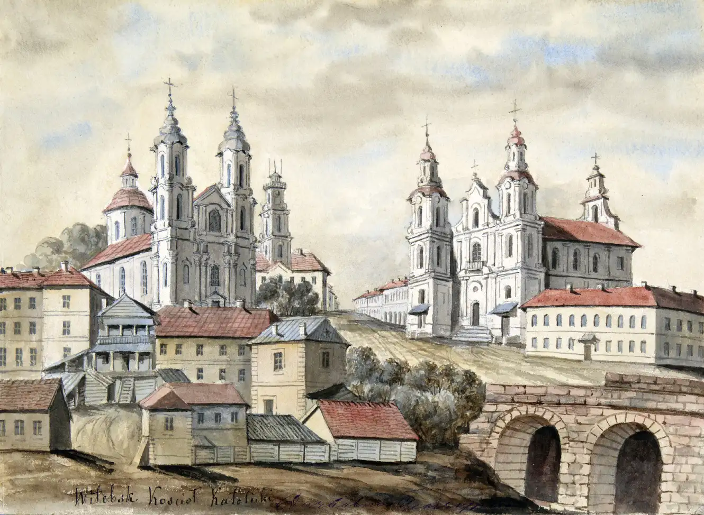
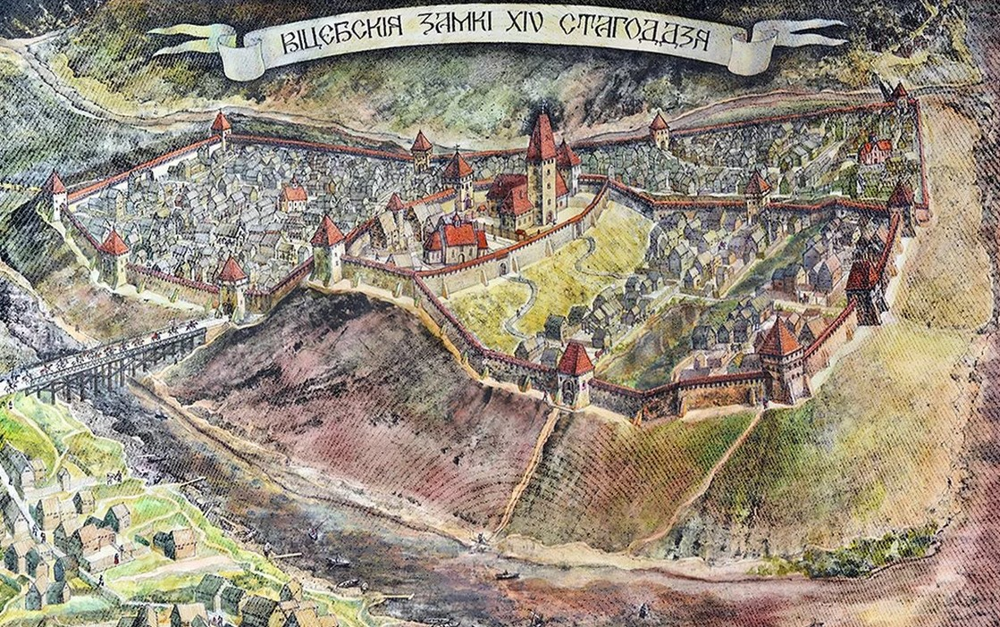
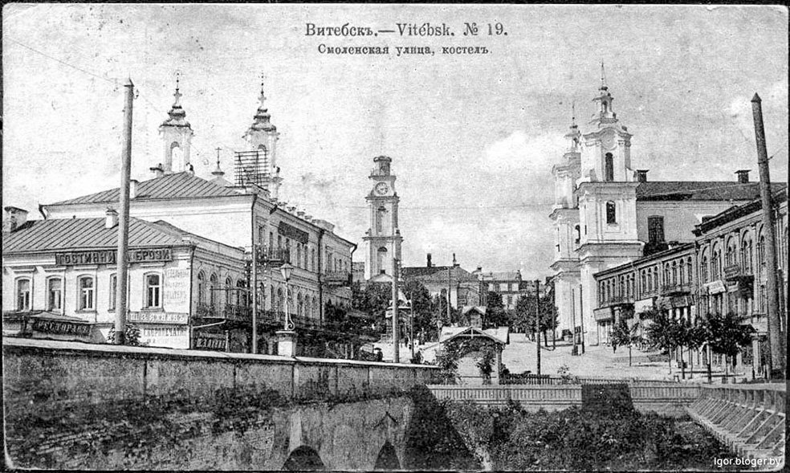
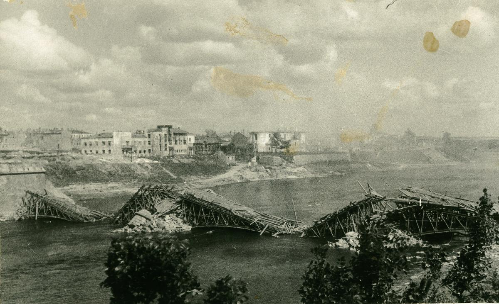
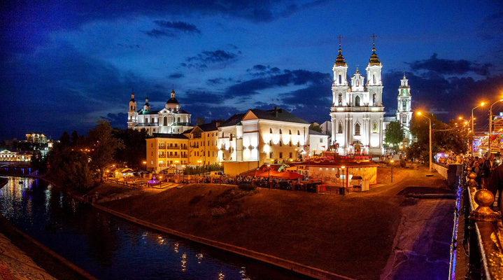

Заснаванне і ранняя гісторыя
Віцебск быў заснаваны ў 974 годзе, калі, паводле легенды, княгіня Вольга загадала пабудаваць горад каля зліцця рэк Заходняя Дзвіна і Віцьба. На працягу стагоддзяў горад ператвараўся ў важны цэнтр гандлю і культуры на тэрыторыі сучаснай Беларусі.
Сярэднявечны Віцебск
У XIV-XVI стагоддзях Віцебск уваходзіў у склад Вялікага Княства Літоўскага. Горад быў адным з самых багатых і развітых у рэгіёне, тут квітнелі рамёствы і гандаль. У 1597 годзе Віцебск атрымаў Магдэбургскае права, што дало яму вялікую ступень самакіравання.
XVIII-XIX стагоддзі: Расійская імперыя
Пасля падзелаў Рэчы Паспалітай у канцы XVIII стагоддзя Віцебск стаў часткай Расійскай імперыі. У гэты час горад хутка разросся, узніклі новыя заводы і фабрыкі, развівалася адукацыя. У XIX стагоддзі Віцебск быў адным з цэнтраў яўрэйскай культуры, тут нарадзіўся сусветна вядомы мастак Марк Шагал.
Віцебск у ХХ стагоддзі
Падчас Вялікай Айчыннай вайны Віцебск быў практычна поўнасцю знішчаны нямецкімі войскамі. Вуліцы горада сталі полем бітвы, а пасля вызвалення ў 1944 годзе пачалося яго аднаўленне. У пасляваенныя гады Віцебск ператварыўся ў буйны індустрыяльны і культурны цэнтр Беларусі.
Сучасны Віцебск
Сёння Віцебск – гэта горад з багатай гісторыяй і сучаснай інфраструктурай. Ён вядомы як сталіца міжнароднага фестывалю «Славянскі базар», тут дзейнічаюць шматлікія музеі, тэатры і культурныя ўстановы. Горад спалучае ў сабе гісторыю і сучаснасць, адначасова застаецца адным з самых прыгожых гарадоў Беларусі.
